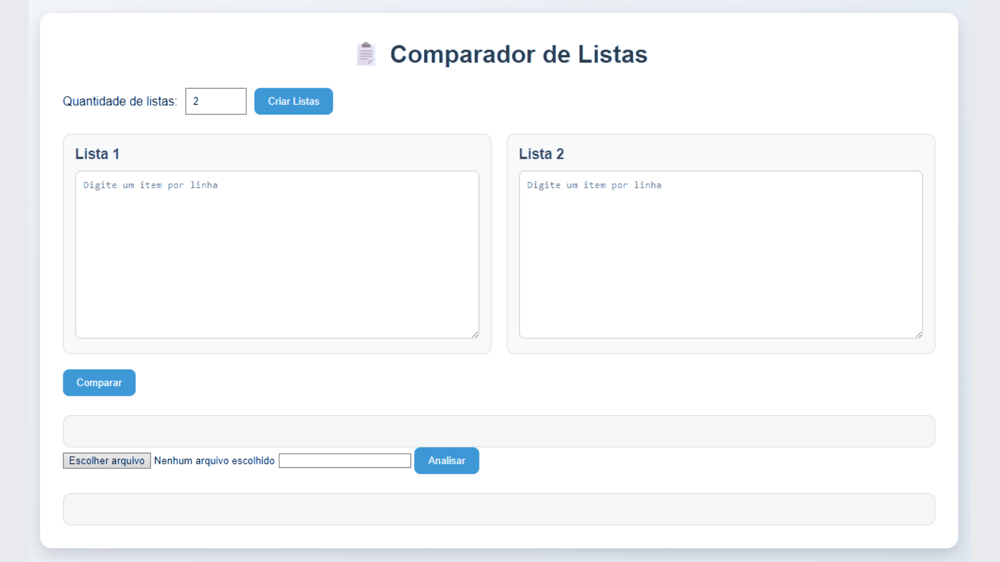
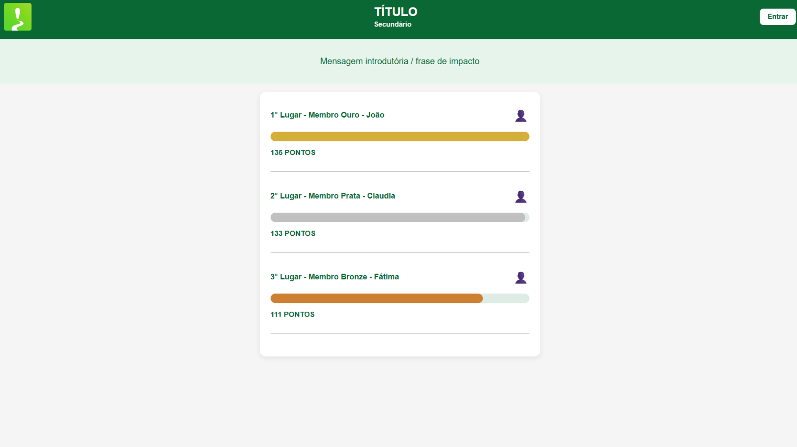

Meus Projetos
Aqui estão alguns dos trabalhos que desenvolvi recentemente

Desenvolvimento Web + BackEnd (API)
Table Analizer
Um projeto utilizando Python para analisar tabelas e listas de forma automatizada.
HTML
CSS
JS
PYTHON

FRONT END
Future City
Projeto dezenvolvido para um hackthon com ranking funcinal.
HTML
CSS
Java Script